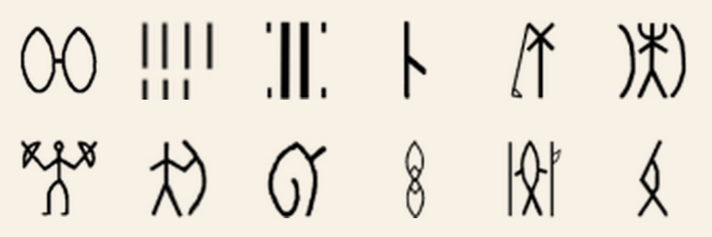
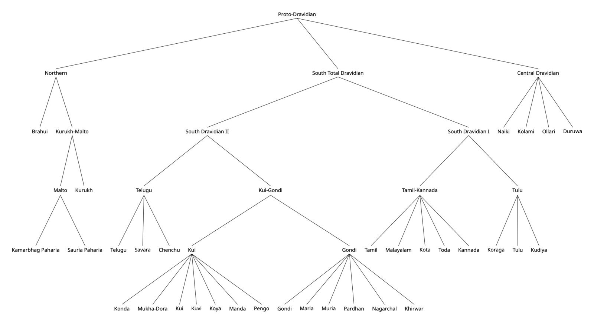

Projects
-

Indus Script Sign FunctionsOne part of my Indus work asks a fairly narrow question: which signs in the script behave more like syllabic signs, and which behave more like logograms? I approach that question computationally, using statistical and distributional patterns in the corpus rather than starting from a proposed decipherment.
This is the line of work behind the IJCA paper and a follow-up now under review at Digital Applications in Archaeology and Cultural Heritage. The broader Indus work was supported in part by an Emergent Ventures grant in 2025.
-
 Semantic Roles in Indus Sign Clusters
Semantic Roles in Indus Sign ClustersA second Indus project, under the mentorship of Rajesh Rao, asks a different question: what kinds of semantic roles might recurring sign clusters have played?
The point here is to avoid making linguistic assumptions about the script. Instead of beginning with a proposed language or decipherment, I assign possible roles to clusters entirely from statistical and distributional evidence — where they occur, what they co-occur with, and how they pattern across the corpus.
-

Proto-Dravidian Lexical Database — TU BerlinAt Technische Universität Berlin, I spent the summer building a structured database of reconstructed Proto-Dravidian vocabulary under the supervision of Andreas Fuls and Martin Kada.
A lot of that work was careful comparison: tracing reconstructions through the literature, cleaning them up, and turning them into something usable for analysis. One book chapter from that project is forthcoming in spring 2026.
-
 The Evolution of Written Chinese, 1910–1945
The Evolution of Written Chinese, 1910–1945A computational study of Chinese-language newspapers from the Republican era, tracking how written Chinese shifted across a period of political and social change.
This grew out of work I started at the New York Historical Society and is now under review at the International Journal of Digital Humanities. Read the Research Square preprint →
-
 Mount Zion Cemetery — GIS Mapping & Digital Archive
Mount Zion Cemetery — GIS Mapping & Digital ArchiveMount Zion and Female Union Band Cemetery is one of the oldest African American cemeteries in Washington, D.C. I work with archival material tied to the cemetery and turn that material into maps, geospatial datasets, and public digital resources.
That has included a map of Mount Zion/FUBS, a separate map of the historic Wilberforce neighborhood, and related digital archive work. I also collaborate with Dr. Mark Auslander (American University) on a story-map tracing the history of Martha Bassett.
Mount Zion/FUBS map →
Historic Wilberforce neighborhood map → -
 The Creation of Chinese America — Digital Exhibit
The Creation of Chinese America — Digital ExhibitAt the New York Historical Society, I did historical research in collaboration with other interns on The Chinese American, one of the earliest newspapers for Chinese Americans, and built a public-facing digital exhibit titled The Creation of Chinese America to present my findings.
-
 Brahmi Script: Origins in the Indus Valley
Brahmi Script: Origins in the Indus ValleyAn independent research paper examining the hypothesis that Brahmi — the ancestor of nearly all South and Southeast Asian writing systems — derived from the Indus Script. Available as a preprint.